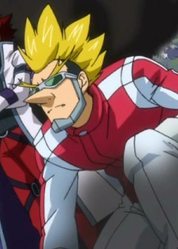
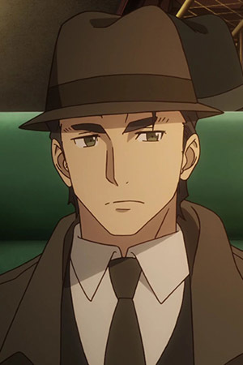

Junji Majima is voice actor. He is affiliated with I'm Enterprise. His iconic roles are Ryuuji Takasu from Toradora! and Yuu Nikaidou from Shugo Chara!
- Gender: Male
- Birthday: May 13, 1978
- Hometown: Aichi, Japan
- Hobbies: Karaoke
- Specialty: Badminton

|

|
|---|
.jpg)
| |
Junji Majima is voice actor. He is affiliated with I'm Enterprise. His iconic roles are Ryuuji Takasu from Toradora! and Yuu Nikaidou from Shugo Chara!
|
|
|---|
 |
Mathew Tetdrich |
|
Mathew Tetdrich is a member od the Imperial Knight Army. He has a strong ambition to succeed in the army. He tries to keep growing steadily everyday. |
|  | Racer |
|
Racer or Sawyer is a former member of Oracion Seis and Mage of Crime Sorciere. Racer's most distinctive trait is his extreme fondeness for speed. He takes great price in his speed and running ability. Despite this, he appears to be more light-hearted than other members of his guild. |
|  | Tobias |
|
Tobias is one of Fine bodyguards. |
Go Back to Main Page |
Go Back to Homepage |
|
|
|
OR |
|